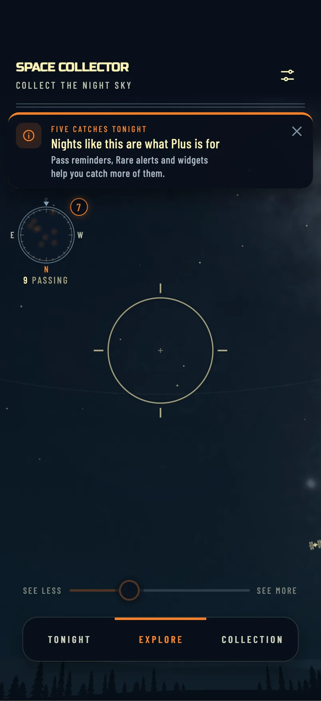
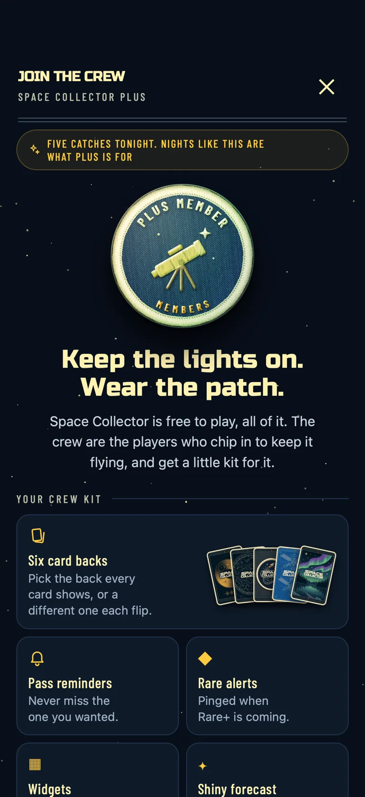
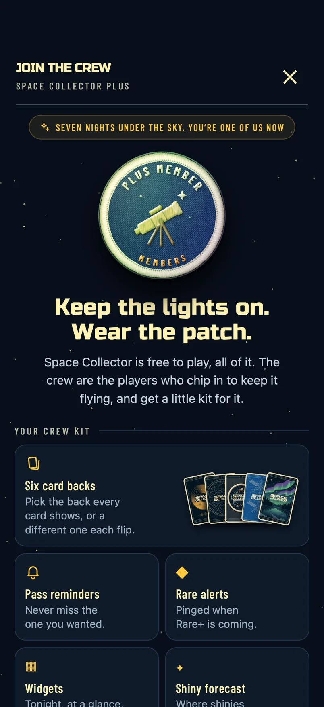
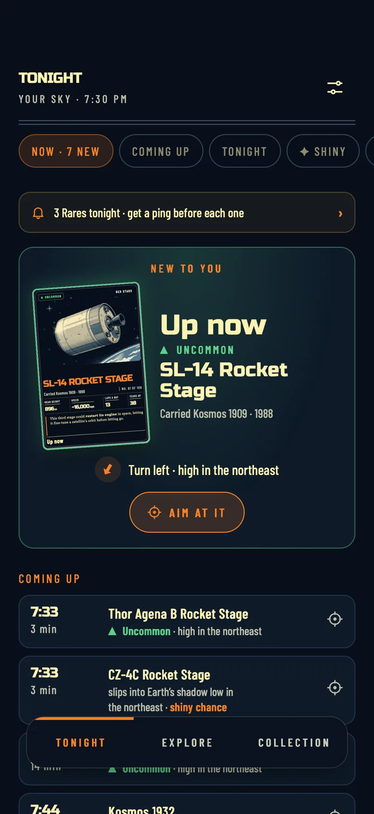
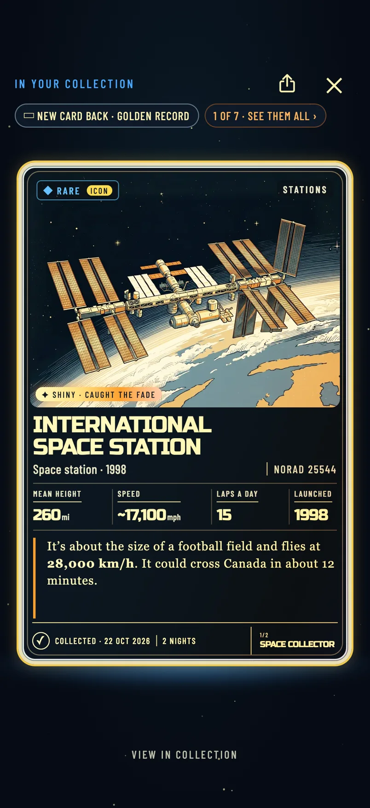
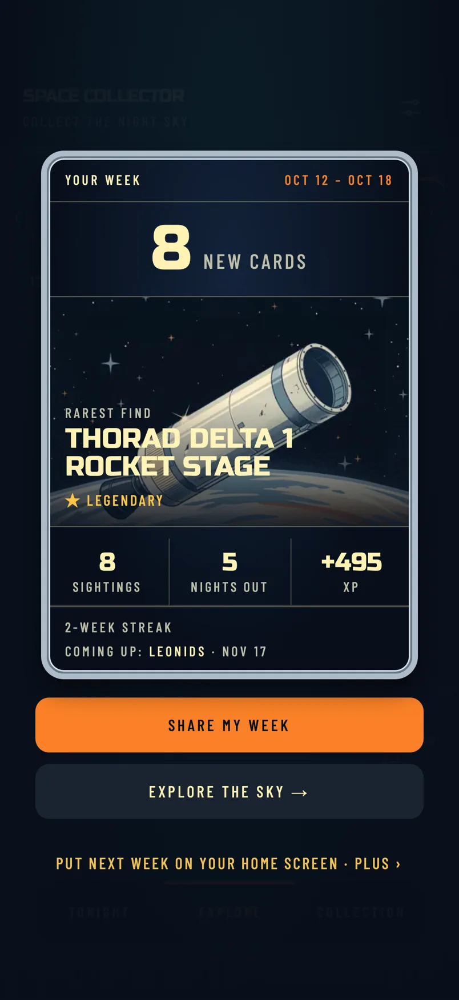

A · A notice firstDrops in from the top after the card is put away. Tap it and the Join the crew page opens. Swipe it away and that’s that. Gentle; my pick.
Today Plus only appears when someone hits a perk (a grey bell, a locked back, “+N more” shiny chances, the widget). These are the moments where it would offer itself, captured from the real app with the new lines dropped in. Nothing here is built yet.
A good night ends (5+ catches, or a new Rare or better, put away), but only from your 4th night on, never your first three; or it’s your 7th night, by day. At most once every 14 days, three times ever. Two ways to show it:



One line each, never a pop-up. They only open the page if tapped.



Good idea. People rate an app when they’re proud of something; they join when they want more of what just happened. So split the moments by feeling, and never ask for both on the same day.
| Moment | Ask for | Why |
|---|---|---|
| Card put away after a rank up or patch | Review | Pride in progress. “Enjoying it?” lands well. |
| A card shared | Review | They just showed it off to someone. |
| A great night (5+ catches / new Rare+) | Plus | They want more nights like it: reminders and alerts are exactly that. |
| Weekly recap closed | Either | Proud of the week and looking ahead. Whichever hasn’t asked for longer. |
| 5th night | Review | Clearly hooked, not asked for money yet. |
| 7th night | Plus | “You’re one of us now.” |
| 10th night | Either | Whichever hasn’t asked for longer. |